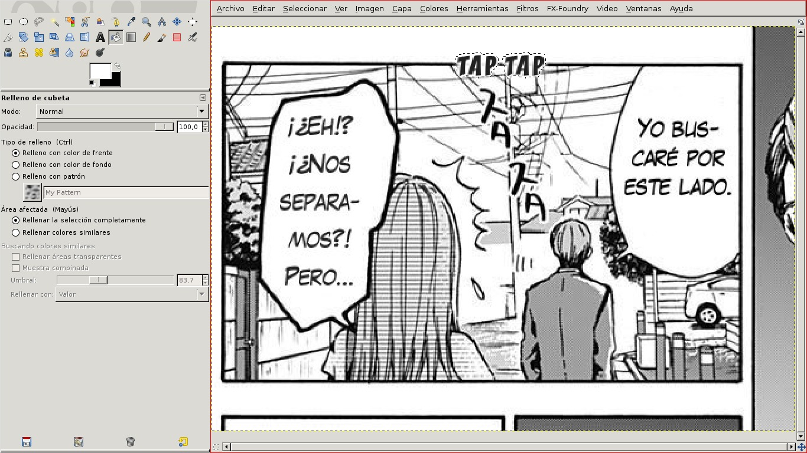
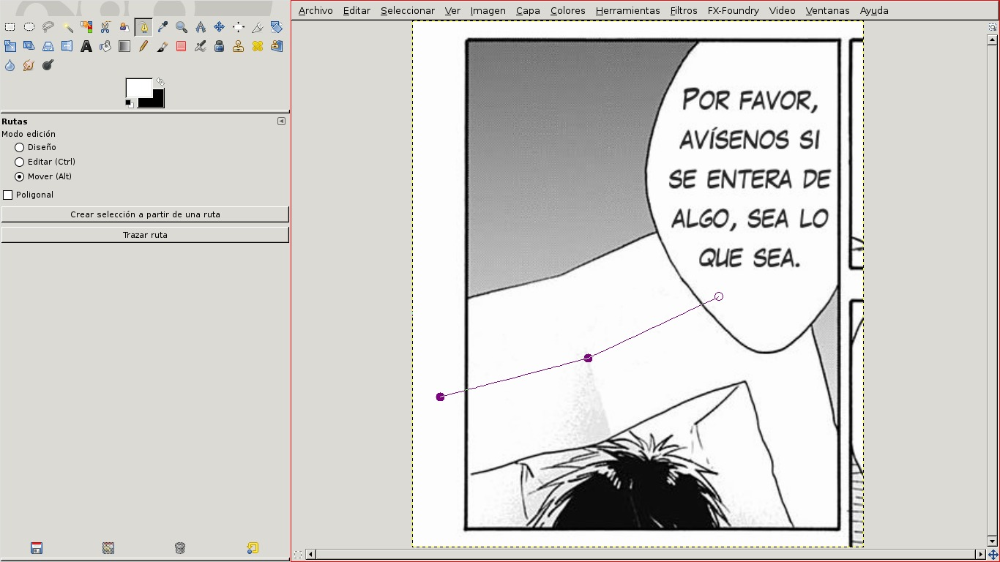

La limpieza consiste en eliminar de las imágenes los textos que se van a traducir. Empezaremos limpiando esta viñeta:
Al abrir la imagen con Gimp tendremos una pantalla similar a ésta (en este caso, en Linux y xmonad):
Ahora usamos la herramienta de selección rectangular (arriba a la izquierda) y rodeamos el texto del primer bocadillo.
Ahora podríamos simplemente pintar el recuadro de blanco con el pincel o la herramienta de relleno, pero esto no siempre queda bien. Cuando la imagen no está bien escaneada, el fondo de los bocadillos no es de un blanco puro sino de un gris muy claro o un blanco con motitas grises. En ese caso, al pintar de blanco se notaría un recuadro blanco en medio del bocadillo y quedaría bastante feo. Algo que siempre da un buen resultado es la herramienta Resynthesize. Se accede a ella en el menú superior, Filtros/Mapa/Resynthesize.
Esta herramienta borra el texto que hay dentro del recuadro seleccionado y deja un fondo similar a lo que hay alrededor de la selección. A veces mira demasiado lejos a su alrededor y nos puede salir algo como esto:
En ese caso, podemos ajustar cómo de lejos mira en la pestaña Tweaks, barra Neighbourhood size, a una distancia más pequeña:
O simplemente ajustar el rectángulo para seleccionar sólo la parte que no ha quedado bien y volver a usar la herramienta hasta que desaparezca.
Ahora pasamos al siguiente bocadillo. Una vez más usamos la herramienta de selección rectangular.
Sin embargo, el bocadillo tiene una forma extraña y no hay manera de encajar el recuadro sin que roce los bordes. Lo solucionamos deseleccionando el rectángulo (Ctrl+A) y usando la herramienta de selección libre.
En general, usar la selección rectangular es más rápido, pero cuando el bocadillo no tiene una forma ovalada o el texto está demasiado cerca del borde, no queda más remedio que usar la selección libre, que es algo más lenta. Y luego se limpia igual, usando Resynthesize. Éste sería el resultado:
Por último, veamos un ejemplo un poco más complicado, un texto fuera de bocadillo con sombras debajo:
Aquí tenemos un texto escrito sobre un papel que sostiene un personaje. En medio tiene un doblez, indicado por una sombra debajo de la letra 友. Empezamos por lo más fácil: borramos las letras fuera de la sombra con la herramienta de selección libre y Resynthesize.
Ahora que tenemos un entorno limpio, podemos usar Resynthesize en la letra problemática sin que nos salgan trozos de las otras letras. La rodeamos con la selección libre, lo más cerca posible, ya que así la herramienta tiene más información para hacer una buena reconstrucción.
No ha quedado del todo como queríamos pero casi. Nos queda un pequeño trabajo de retoque.
Podemos arreglarlo con la herramienta de clonado o la de saneado, según el caso. Aquí usaremos saneado. De paso, también deseleccionamos (Ctrl+A).
Los círculos indican el pincel de la herramienta de saneado. Éste es el resultado final, con toda la viñeta limpia:
Una vez hemos quitado el texto original de la imagen, toca colocar su traducción. En eso consiste el rotulado. Veremos tres ejemplos, de más sencillo a más complicado.
Seleccionamos la herramienta de texto y escribimos la traducción o la copiamos y pegamos de algún archivo de texto.
El siguiente paso es ajustar el tamaño de la letra y mover el texto más o menos a la zona del bocadillo.
Para ajustar el texto al bocadillo tenemos varias herramientas. Una combinación de ellas nos dará el resultado que queremos:
Hay que procurar que el texto quede centrado en el bocadillo, tanto horizontal como verticalmente, no quede muy pegado al borde ni tampoco muy separado, y los renglones tengan todos más o menos el mismo tamaño. Con un poco de ensayo y error obtenemos:
El otro bocadillo se hace igual. Pasamos ahora a la onomatopeya. Cambiamos el tipo de letra y el tamaño, y escribimos más o menos cerca de donde debe ir:
A continuación añadiremos un borde blanco a las letras. Para ello, cerramos la herramienta de texto, vamos al menú Capa y escogemos Texto a selección. Luego, en el mismo menú, escogemos Capa a tamaño de imagen y Duplicar capa. Si abrimos el diálogo de capas (Ctrl+L) veremos que tenemos tres capas. Dos corresponden a nuestro texto y una a la imagen de fondo.
Pulsando la tecla AvPág bajamos una capa y nos colocamos en la intermedia (de paso, cerramos el diálogo de capas, que no nos hace falta). Ahora, en el menú Seleccionar, escogemos la herramienta Agrandar para ampliar la selección. En este caso la ampliaremos 2 píxeles.
Y en el mismo menú Seleccionar escogemos Difuminar, en este caso 4 píxeles. Luego usamos la herramienta de relleno para pintar la selección de blanco.

Seguidamente, deseleccionamos (Ctrl+A), nos movemos a la capa superior (RePág), unimos las dos capas superiores (Capa/Combinar hacia abajo) y rotamos la capa.
Por último, movemos la capa para trasladar el texto a su lugar y unimos todas las capas (Imagen/Aplanar la imagen).
Ahora escribiremos el texto en el papel que habíamos limpiado.

Dado que el papel está doblado, necesitaremos doblar el texto. Además, deberemos recortarlo, ya que el bocadillo lo tapa parcialmente. Para poder recortar fácilmente usaremos una capa nueva transparente, que crearemos con May+Ctrl+N.
Usaremos una ruta para escribir el texto doblado. Primero dibujamos una ruta siguiendo el borde del papel:
Y luego la movemos hacia donde debería estar el texto:

Abrimos el diálogo de capas y le añadimos una solapa de rutas si no la tiene ya, con la flecha de la esquina superior derecha.
Elegimos la ruta que habíamos dibujado y la hacemos visible con el icono del ojo.
Escribimos el texto, alineado a la izquierda, en cualquier lugar de la imagen.
Y pulsamos el botón de Texto siguiendo una ruta.
Así hemos obtenido una ruta con la misma forma que el texto, como podemos comprobar en el diálogo de rutas.
Ahora borramos la ruta antigua, que ya no necesitamos, y la capa de texto.
A continuación, en la solapa de rutas, pulsamos con el botón derecho del ratón sobre nuestra ruta, elegimos Ruta a selección y luego borramos la ruta.
Tenemos así una selección con la forma de nuestro texto, que pintamos de negro con la herramienta de relleno.
Deseleccionamos (Ctrl+A) y ahora toca borrar el texto que sobresale por los lados. Se puede hacer de varias maneras. En un caso tan sencillo como éste simplemente usaremos la herramienta borrador. Y por último aplanamos la imagen. Éste es el resultado:
Ahora rotularemos esta imagen:
El único texto que requiere una técnica novedosa es el texto hueco amarillo del medio. El resto se pueden obtener con lo que ya hemos visto en los ejemplos anteriores de escribir un texto siguiendo una ruta y añadir un borde a un texto.
Empezamos escribiendo el texto cerca del original, con un tamaño de letra adecuado.

Luego pulsamos el botón Crear una ruta a partir del texto.
Borramos la capa de texto, que ya no la necesitamos, y tenemos una ruta limpia con la que trabajar.

Ahora, con la herramienta de rotación, giramos la ruta hasta que esté paralela al texto japonés.
Y con la herramienta Mover la desplazamos hacia arriba (no la herramienta de rutas, que nos movería cada letra por separado).
Luego, en la herramienta Pincel, escogemos un tamaño de pincel y un color adecuados para pintar nuestras letras.
Finalmente, seleccionamos nuestra ruta en la solapa de rutas, volvemos a la herramienta de rutas, pulsamos el botón Trazar ruta y escogemos Trazar utilizando una herramienta de pintura y el pincel.
Al eliminar la ruta obtenemos el resultado final: